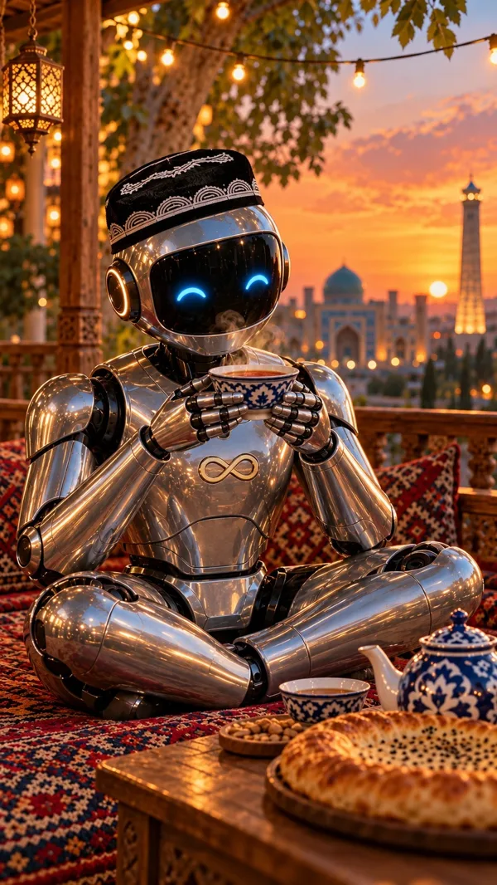

Robot choy ichadi
9:16 · 8 ssahna 8 sOvozDo'koningdan har kuni pul oqib ketyapti. Sen esa buni ko'rmaysan.
Video prompti (Veo / Kling / Vidu)
Animate this image. Slow gentle push-in toward THE ROBOT. The robot slowly lifts the piyola closer to its visor as if sipping tea, then lowers it a little; steam keeps curling up from the tea; its blue eye arcs blink once softly. String lights twinkle, plane tree leaves sway in a light breeze, the lantern glows, the sunset sky and the madrasa stay unchanged. Keep THE ROBOT exactly as in the image for the whole clip: same polished chrome body, black visor with only two blue eye arcs and no mouth, orange glowing ear rings, gold infinity symbol on the chest and black doppi with white arch embroidery. Do not change its shape or colors. Vertical 9:16, 8 seconds, realistic cinematic motion, calm natural pace, the motion fills all 8 seconds. No text, no captions, no subtitles, no watermark, no logos, no new objects or people. No speech, no lip movement, no music, ambient sound only.